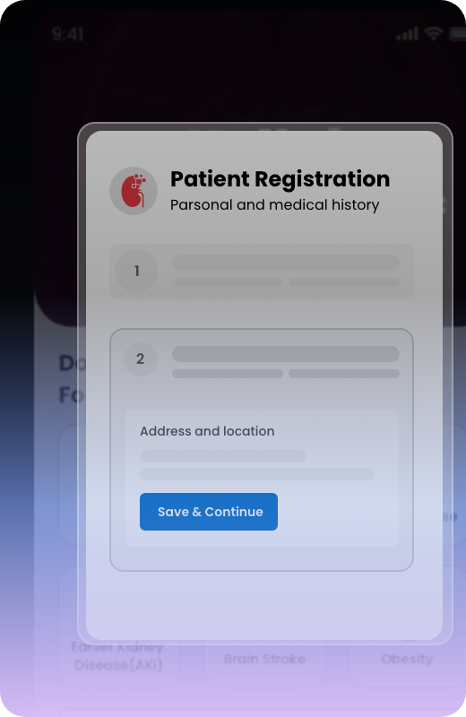
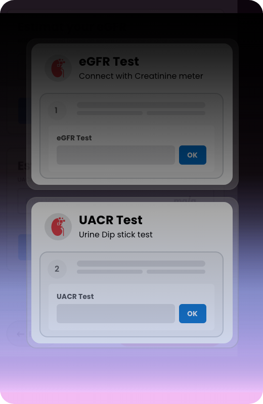
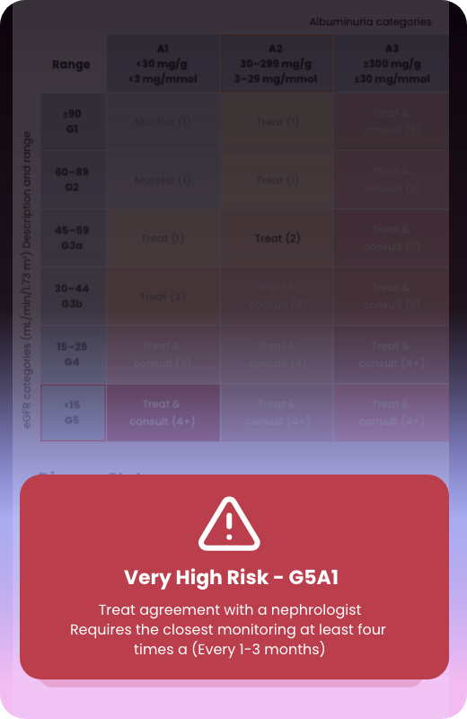
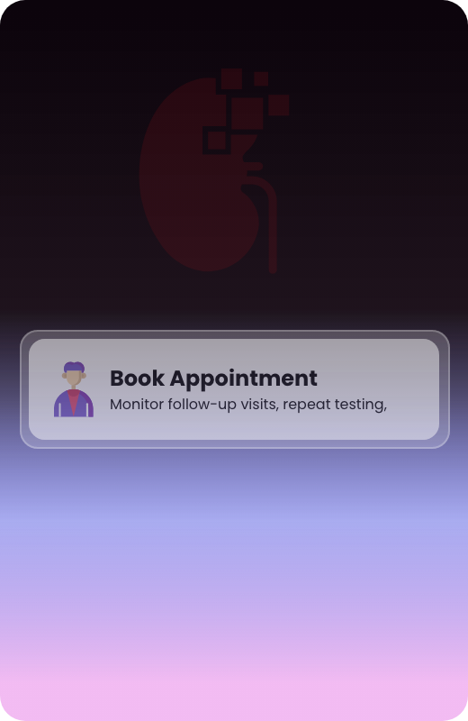

9 out of 10 people don't know they have kidney disease. HelloKidney finds them and tells you what to do about it.
Screen patients for chronic kidney disease in minutes using urine ACR and eGFR. Then get physician-led, KDIGO guideline-directed treatment recommendations — personalised to each patient's clinical data and test results.
From screening to treatment plan in one app.

Record basic demographics and risk profile (diabetes, hypertension, family history).

Run a urine ACR test with Hellokidney UACR strips and an eGFR test with the creatinine meter.

Receive a colour-coded kidney risk classification with guidance for next steps.

Monitor follow-up visits, repeat testing, and patient outcomes over time.
HelloKidney.ai is designed for healthcare professionals at the forefront of kidney disease management.
Get Started FreeJoin 500+ healthcare professionals already using HelloKidney.ai
HelloKidney.ai is designed to meet the demanding requirements of healthcare organizations worldwide.